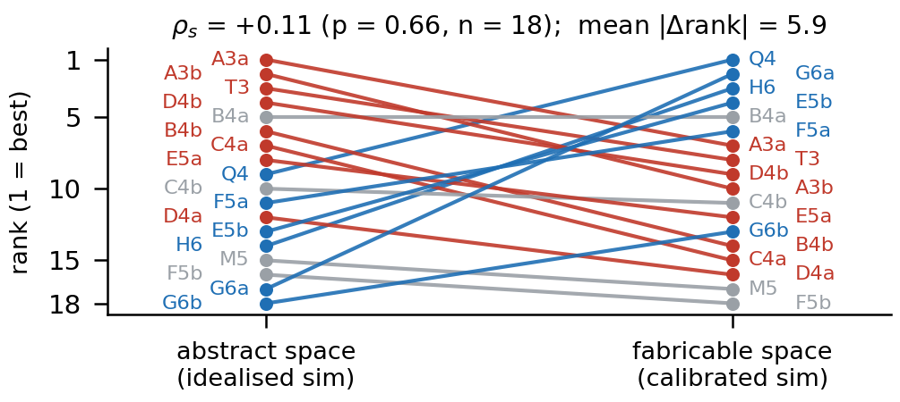
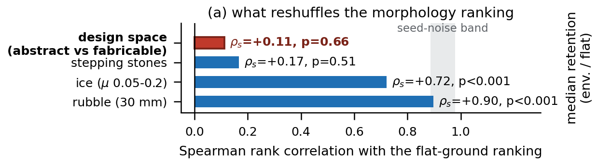
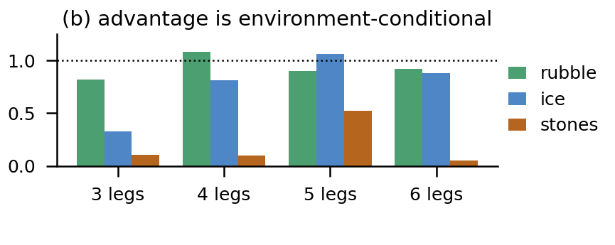

An 18-morphology, 4-environment study on a modular icosahedral legged robot
1Creative Machines Lab, Columbia University
Training-time trajectories of all 18 morphologies replayed through MuJoCo forward kinematics · 20 s clips · 4 environments · fabricable bodies drawn with the current leg design (v50: 4 printed parts + 3 × XM430 per leg, same joint layout as the trained model), abstract bodies as the proxies that simulator computes with (capsule links, lumped joint masses)
The same 18 robot bodies, trained once in the idealised simulator a co-design search uses and once as printable machines: the two rankings are unrelated (ρs = 0.11) — while changing terrain or friction leaves them intact (ρs = 0.7–0.9). Fidelity belongs inside the co-design loop, not after it.
Learning-based co-design methods score candidate robot bodies in a simplified simulator and return a ranked list. We ask how much of that ranking survives when the designs are made buildable. We take 18 morphologies of a modular icosahedral legged robot, sampled from our own evolutionary co-design space, and train each with the same PPO recipe in a replica of the abstract simulator used by the search and in a fabricable simulator calibrated against CAD models and motor datasheets. The two rankings are uncorrelated (ρs = +0.11, p = 0.66; mean rank change 5.9 of 18): the best abstract design drops to 7th, and a design that barely moved in the abstract simulator (0.54 m, 17th) becomes 2nd at 10.8 m. The reshuffle is robust to the training seed (P < 0.02 under resampling), to reward re-weighting and added mass (ρs ≥ 0.77) and to halving the training budget (ρs ≥ 0.90), and it is caused mainly by the changes in geometry, DoF allocation, rest pose and mass rather than by the actuator model (ρs = −0.30 vs. +0.61). Changing the terrain at fixed realization, in contrast, largely preserves the ranking (rubble ρs = 0.90, ice 0.72); only stepping stones reshuffle it as much. We trace the reshuffle to a shell-sliding exploit, to rest poses that penetrate or float above the ground, and to a leg-count advantage that exists only in the abstract simulator. Simulator fidelity should therefore be part of the co-design loop rather than a step after it.
Rank of each of the 18 bodies after training in the abstract simulator vs. as a fabricable robot — then across terrains.



Left: as the abstract simulator sees it → right: as a fabricable robot · 20 s displacement and rank of 18 · ordered by abstract rank · click either side to load it in the viewer
Same reward, same PPO budget, same 18 bodies — only the simulator changes.
Reverting only the actuator to the ideal servo leaves the ranking unrelated to the abstract one (ρs = −0.30) but close to the calibrated one (ρs = +0.61): geometry, DoF, rest pose and mass do the damage — not the actuator.
| Morph | Species | Legs | Abstract m | rank | Ideal-servo m | Fabricable m | rank | Rubble m | Ice m | Stones m | F | J |
|---|---|---|---|---|---|---|---|---|---|---|---|---|
| Q4 | (3,3,3,3) hand-designed | 4 | 7.75 | 9 | 13.50 | 11.72 | 1 | 9.70 | 8.50 | 0.39 | 2 | 6 |
| G6a | (2,2,2,2,2,2) | 6 | 0.54 | 17 | 12.25 | 10.84 | 2 | 9.62 | 8.95 | 0.54 | 2 | 4 |
| H6 | (2,2,2,2,2,2) hand-designed | 6 | 3.39 | 14 | 11.88 | 10.09 | 3 | 9.25 | 8.89 | 1.93 | 2 | 4 |
| E5b | (4,2,2,2,2) | 5 | 4.11 | 13 | 10.43 | 9.45 | 4 | 8.52 | 7.15 | 1.12 | 1 | 2 |
| B4a | (3,3,3,3) | 4 | 8.93 | 5 | 2.29 | 5.79 | 5 | 5.25 | 3.93 | 0.36 | 1 | 3 |
| F5a | (3,3,2,2,2) | 5 | 7.27 | 11 | 6.94 | 5.64 | 6 | 6.94 | 7.49 | 4.02 | 0 | 5 |
| A3a | (4,4,4) | 3 | 17.53 | 1 | 3.68 | 5.53 | 7 | 4.52 | 1.42 | 0.63 | 2 | 8 |
| T3 | (4,4,4) hand-designed | 3 | 11.12 | 3 | 5.85 | 5.46 | 8 | 4.06 | 3.57 | 0.48 | 0 | 0 |
| D4b | (4,4,2,2) | 4 | 9.80 | 4 | 3.49 | 5.30 | 9 | 5.17 | 6.49 | 0.45 | 1 | 8 |
| A3b | (4,4,4) | 3 | 12.39 | 2 | 6.42 | 5.24 | 10 | 4.99 | 1.73 | 0.55 | 1 | 4 |
| C4b | (4,3,3,2) | 4 | 7.51 | 10 | 8.16 | 4.80 | 11 | 5.19 | 6.16 | 0.58 | 1 | 4 |
| E5a | (4,2,2,2,2) | 5 | 7.84 | 8 | 9.87 | 4.44 | 12 | 3.58 | 4.72 | 2.55 | 2 | 6 |
| G6b | (2,2,2,2,2,2) | 6 | 0.13 | 18 | 7.07 | 4.39 | 13 | 5.39 | 6.44 | 0.18 | 3 | 6 |
| B4b | (3,3,3,3) | 4 | 8.82 | 6 | 6.79 | 3.31 | 14 | 3.75 | 5.67 | 0.33 | 1 | 3 |
| C4a | (4,3,3,2) | 4 | 8.45 | 7 | 3.05 | 2.72 | 15 | 2.96 | 1.12 | 0.39 | 2 | 6 |
| D4a | (4,4,2,2) | 4 | 5.90 | 12 | 4.18 | 2.26 | 16 | 2.71 | 1.83 | 0.41 | 2 | 6 |
| M5 | (3,3,2,2,2) hand-designed | 5 | 3.26 | 15 | 3.09 | 2.13 | 17 | 2.22 | 1.39 | 0.57 | 2 | 6 |
| F5b | (3,3,2,2,2) | 5 | 2.80 | 16 | 0.46 | 1.47 | 18 | 1.18 | 1.65 | 0.77 | 1 | 5 |
Mean 20 s displacement over 4096 rollouts · Ideal-servo = fabricable body with the abstract servo model · F / J = placement / axis mirror-asymmetry (0 = symmetric) · click a header to sort
@inproceedings{icos2026realization,
title = {Co-Design Rankings Do Not Survive Realization: An 18-Morphology, 4-Environment Study},
author = {Author One and Author Two and Author Three},
booktitle = {IROS 2026 Workshop on Learning-based Robot Co-design: Generative and Iterative Approaches},
year = {2026},
note = {Non-archival extended abstract}
}